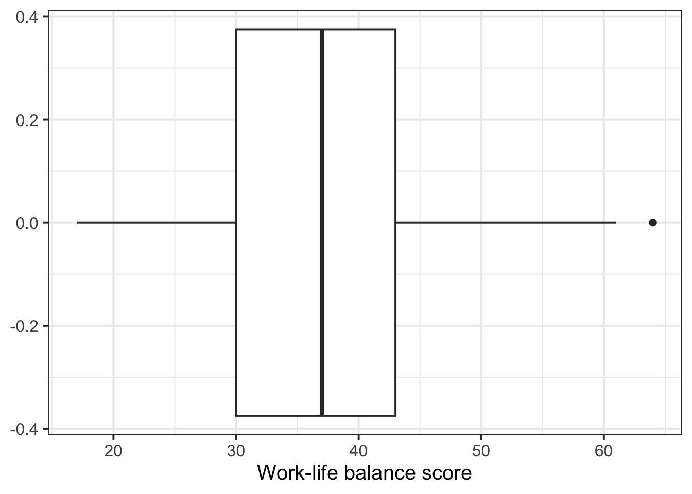
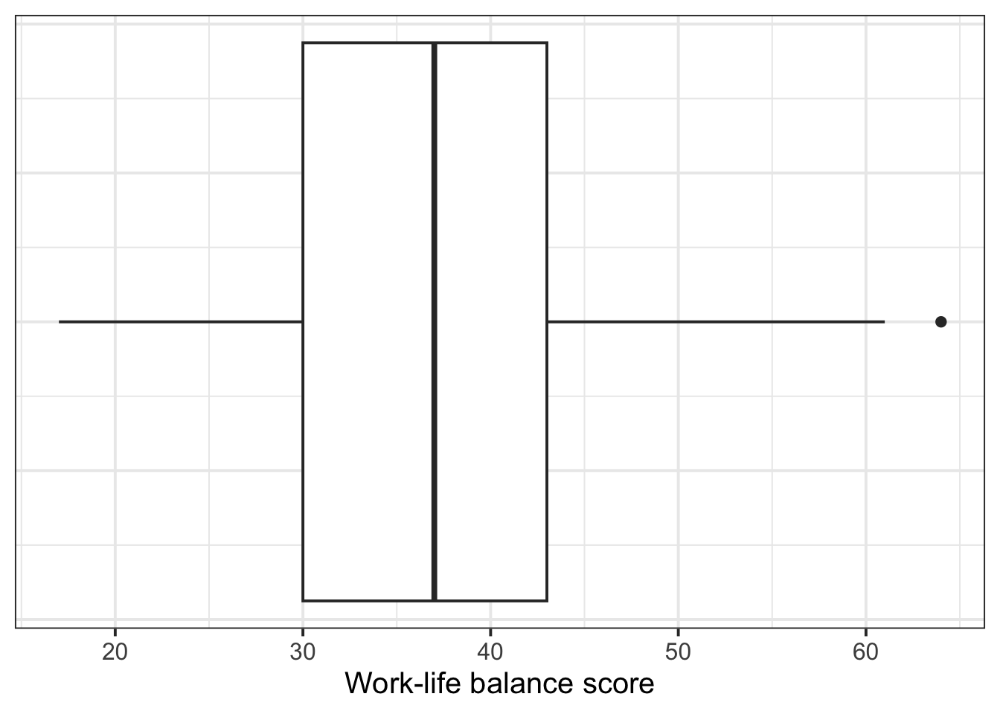
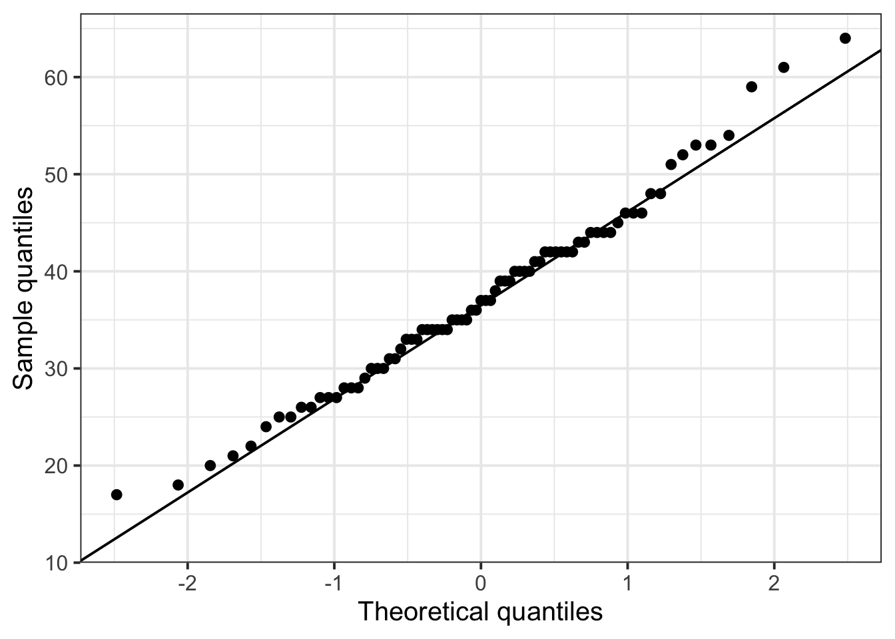

wlb_data |>
head()# A tibble: 6 x 2
worker_id wlb
<chr> <dbl>
1 worker1 27
2 worker2 37
3 worker3 25
4 worker4 54
5 worker5 39
6 worker6 25RQ: For remote workers, is their average score on the Work-Life Balance (WLB) Scale below the scale’s midpoint of 45, indicating reasonable work–life balance?
Here’s what the first six rows of the data looks like:
wlb_data |>
head()# A tibble: 6 x 2
worker_id wlb
<chr> <dbl>
1 worker1 27
2 worker2 37
3 worker3 25
4 worker4 54
5 worker5 39
6 worker6 25Work–Life Balance (wlb) scores can range between 15 and 75. Higher scores represent greater conflict between work commitments and life commitments, so good work–life balance is reflected in lower scores.
Here’s how we might plot this data (you’ll see more plotting options in Block 3):
wlb_data |>
ggplot(aes(x = wlb)) +
geom_boxplot() +
labs(
x = 'Work-life balance score'
)
Add in a couple extra lines of code, where in the theme() of the plot, we say “set the axis text on the y axis equal to a blank element”, and the same for the “axis ticks on the y axis” (the little horizontal lines).
wlb_data |>
ggplot(aes(x = wlb)) +
geom_boxplot() +
labs(
x = 'Work-life balance score'
) +
theme(
axis.text.y = element_blank(),
axis.ticks.y = element_blank()
)
We want to know whether remote workers’ work–life balance score is below the scale’s midpoint of 45, on average.
Thus our null hypothesis \(H_0\) is that the true average work–life balance score \(\mu\) (Greek letter mu, pronounced “mew”) is equal to 45, or formally
\[ H_0: \mu = 45 \]
And based on our RQ, we know that our alternative hypothesis \(H_1\) is that the average work–life balance score \(\mu\) is lower than 45, or formally
\[ H_0: \mu < 45 \]
Use the function t.test(), and give it four pieces of information:
mu = the mean value we want to test againstalternative = two.sided, less, or greater; the direction of the \(H_1\)conf.level = 1 minus our \(\alpha\) level; in Psychology, this will nearly always be .95.t.test(
wlb_data$wlb,
mu = 45,
alternative = 'less',
conf.level = .95
)
One Sample t-test
data: wlb_data$wlb
t = -7, df = 76, p-value = 4e-10
alternative hypothesis: true mean is less than 45
95 percent confidence interval:
-Inf 39.1
sample estimates:
mean of x
37.2 To find out whether remote workers experience work–life balance that’s better (that is, lower) than the midpoint of the Work–Life Balance Scale, we ran a one-sided t-test against the null hypothesis that remote workers’ Work–Life Balance score is, on average, equal to 45. We were able to reject this H0; remote workers have a significantly lower Work–Life Balance score of 37.2 on average (\(t\)(76) = –7, \(p\) < .001, one-tailed).
| Type of requirement / assumption | What to check for a one-sample t-test |
|---|---|
| Data requirements | The variable is numeric. |
| Assumption of independence | The obtained sample data are a random sample from the population of interest. |
| Assumption of normality | EITHER the population follows a normal distribution OR the sample size \(\geq\) 30. |
The variable we’re analysing should be interval, ratio, or integer data (that is, numeric).
The wlb variable is indeed numeric (specifically, it’s integer data!):
wlb_data$wlb [1] 27 37 25 54 39 25 41 44 42 31 53 40 28 48 34 35 46 45 42 46 44 36 42 34 33
[26] 17 29 40 51 34 40 34 18 30 30 34 48 44 33 32 43 42 27 27 39 44 34 46 40 28
[51] 39 21 52 59 31 22 42 33 64 35 43 35 26 37 53 37 61 41 26 42 24 20 38 30 35
[76] 36 28The obtained sample data should be a random sample from the population of interest.
This is an issue of study design more than something we can check directly.
But we can at least check that each person contributed only one data point:
wlb_data |> head()# A tibble: 6 x 2
worker_id wlb
<chr> <dbl>
1 worker1 27
2 worker2 37
3 worker3 25
4 worker4 54
5 worker5 39
6 worker6 25Yes, looks good!
EITHER the population follows a normal distribution OR the sample size is \(\geq\) 30.
If each row represents a different observation, then we can figure out the size of the sample by counting the number of rows in the dataframe.
nrow(wlb_data)[1] 77We have 77 observations, which is greater than 30. This means that, by the Central Limit Theorem, the sampling distribution of sample means is sufficiently normal. So we can be satisfied that the assumption of normality is met.
For illustration, here’s how we’d check normality if we didn’t have sufficient sample size:
The closer the points are to the diagonal line, the better the variable matches an ideal normal distribution.
wlb_data |>
ggplot(aes(sample = wlb)) + # notice it's "sample", not "x"!
geom_qq() +
geom_qq_line() +
labs(
x = "Theoretical quantiles",
y = 'Sample quantiles'
)
The match to the diagonal is overall not too bad here!
The Shapiro-Wilk test is a hypothesis test where:
We don’t want to reject this H0, so we want a non-significant result!
shapiro.test(wlb_data$wlb)
Shapiro-Wilk normality test
data: wlb_data$wlb
W = 1, p-value = 0.6To report this test, you might say:
We performed a Shapiro-Wilk test against the null hypothesis of normality of the population data. Based on the sample, we could not reject the null hypothesis of normality in the population (\(W\) = 1, \(p\) = .6).
For t-tests, the appropriate measure of standardised effect size is Cohen’s D.
To compute this in R, first attach the effectsize package:
library(effectsize)This package gives us the function cohens_d(). Give it the exact same arguments you’d give t.test() (see summary above):
cohens_d(
wlb_data$wlb,
mu = 45,
alternative = 'less',
conf.level = .95
)Cohen's d | 95% CI
-------------------------
-0.80 | [-Inf, -0.58]
- Deviation from a difference of 45.
- One-sided CIs: lower bound fixed at [-Inf].In addition to the information reported above, you might write something like
With a Cohen’s D of –0.80, this difference represents a large effect.